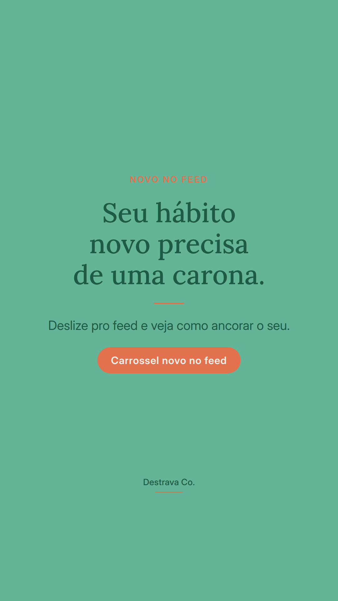
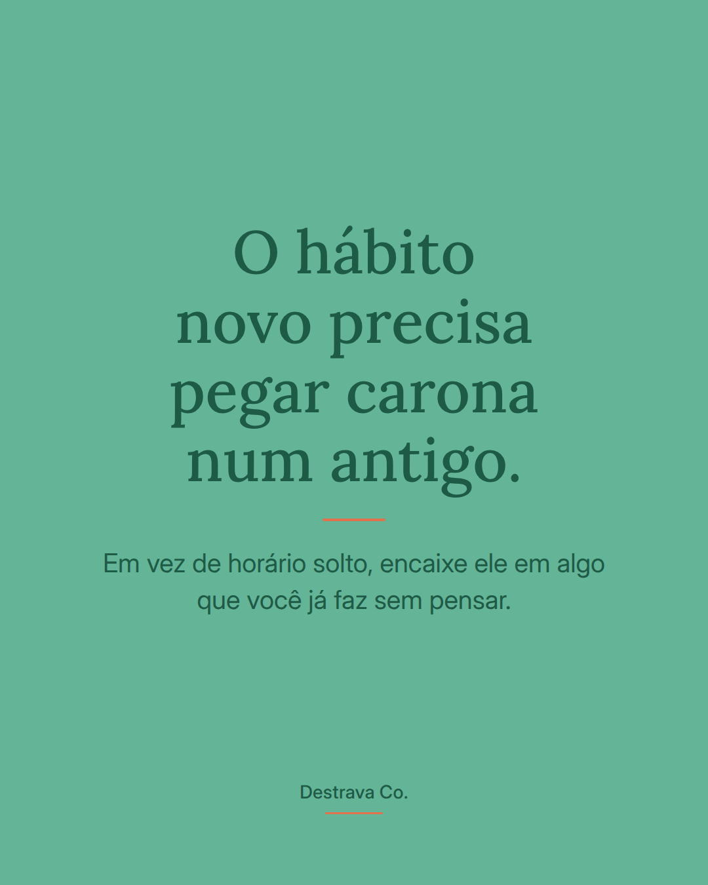
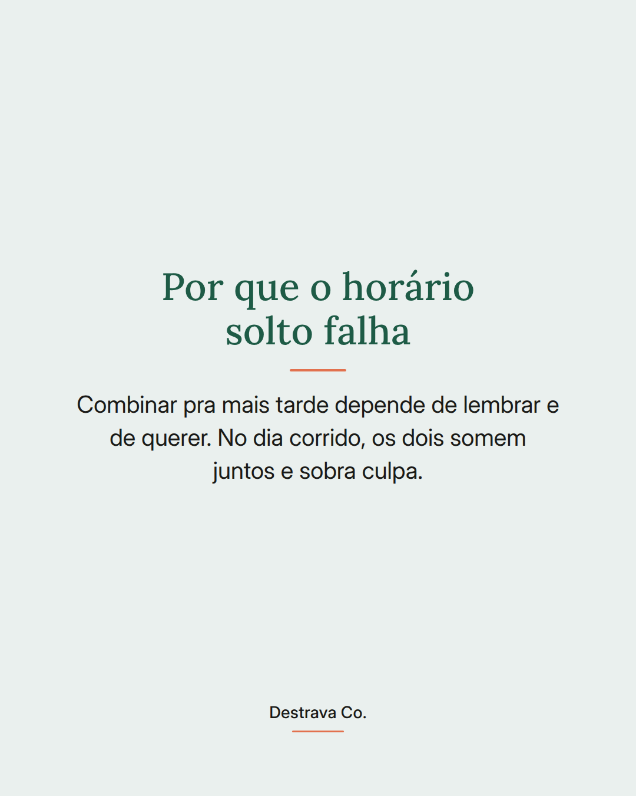
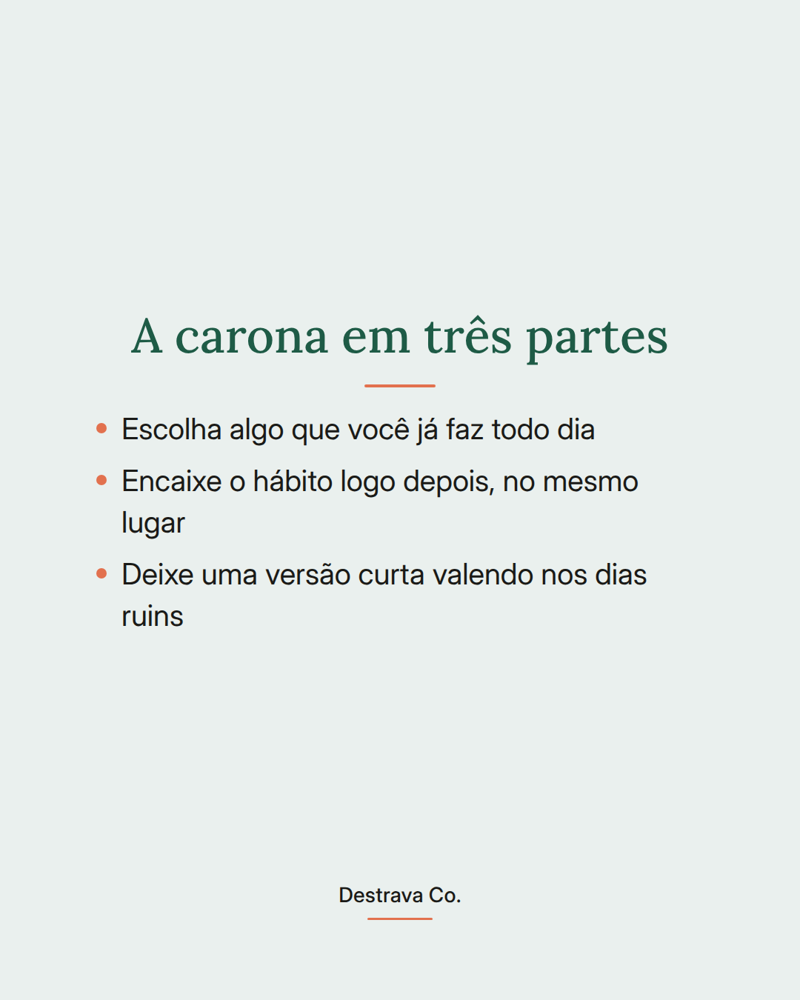
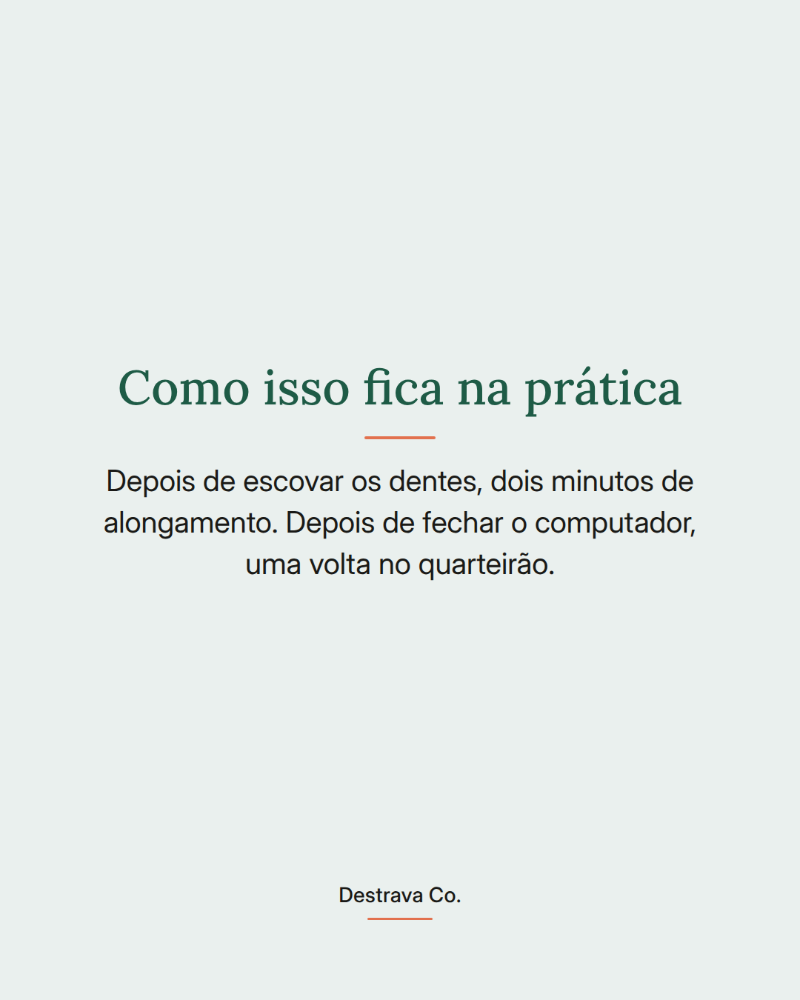

Hábito novo não cola em horário solto: cola em cima de um hábito que já existe.
Se você já tentou começar alguma coisa às sete da manhã e isso nunca aconteceu, talvez o problema não seja falta de vontade. É que o horário sozinho não lembra de você.
A saída é dar carona. Pegue algo que já acontece todo dia no piloto automático e encaixe o hábito novo logo depois, no mesmo lugar. Escovar os dentes e alongar dois minutos. Fechar o computador e dar uma volta no quarteirão.
Nos dias ruins, vale a versão curta. O que importa é manter a sequência viva, não fazer bonito.
Salva pra lembrar na hora de montar a sua e manda pra uma amiga que vive recomeçando. Se quiser fazer isso com acompanhamento, o Destrava 21 te guia pelo método D.R.A. em passos curtos.